Префектура Киото · Хигасияма · отель
Park Hyatt Kyoto: отель на холме Хигасияма, который поселился в саду старого рётэй
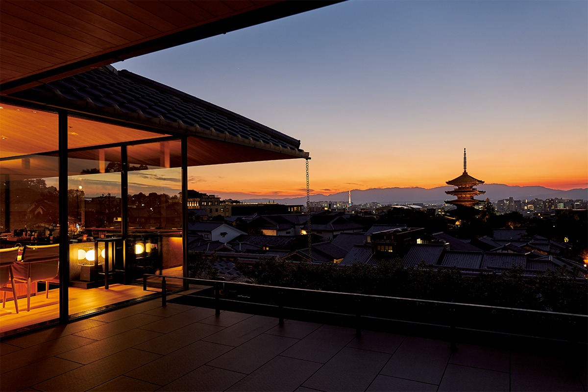
На склоне Хигасиямы, между храмом Кодай-дзи и улочкой Нинэндзака, стоит сад рётэй, которому больше ста сорока лет. В 2019 году в этом саду открылся Park Hyatt Kyoto, и старый ресторан с международным отелем стали соседями.
Место
Отель в саду рётэй
Park Hyatt, самая высокая марка в семье Hyatt, известна современными интерьерами. В Киото она построила отель не на пустом месте, а на земле Sanso Kyoyamato, рётэй, открытого в 1877 году. Сами здания ресторана ещё старше, и с ними связано немало историй, о которых любители прошлого знают и без путеводителя.
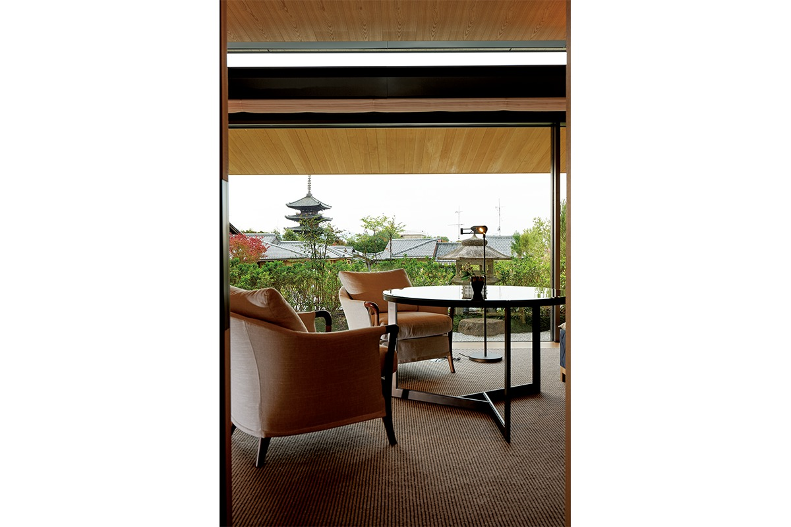
В конце эпохи Эдо здесь собирались самураи из разных княжеств, чтобы обсудить свержение сёгуната. Среди них были Когоро Кацура (1833–1877), один из вождей княжества Тёсю, позже ставший одним из творцов реформ Мэйдзи, и Идзуми Маки (1813–1864), жрец и идеолог движения из княжества Курумэ. Бывали здесь и соратники Кацуры по Тёсю: Каору Иноуэ (1836–1915), впоследствии министр нового правительства, и Гэндзуй Кусака (1840–1864), один из самых пылких сторонников переворота.
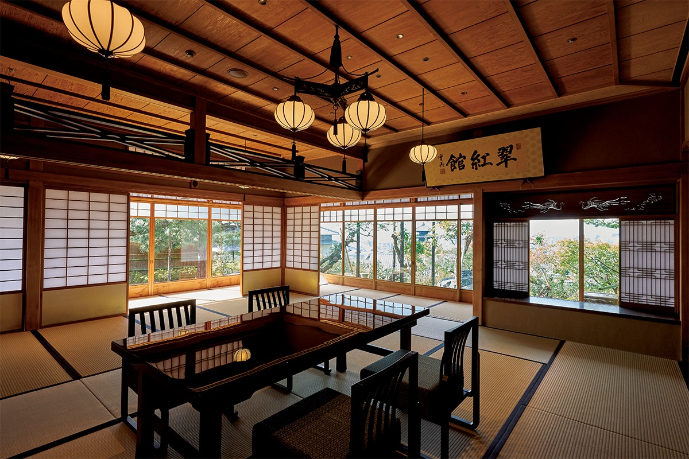
Участок занимает лучшее место Хигасиямы. Он примыкает к храму Кодай-дзи, а одной стороной выходит на Нинэндзаку, мощёный подъём к храму Киёмидзу-дэра из списка Всемирного наследия. Кодай-дзи основала Кита-но Мандокоро (умерла в 1624 году), главная жена Хидэёси Тоётоми (1537–1598), полководца, объединившего Японию в конце XVI века: храм она построила, чтобы молиться о его душе. Пешком отсюда можно дойти до святилища Ясака-дзиндзя и Гиона. Вокруг тихо, оживлённо только у входа в кафе Kyoto Bistro со стороны Нинэндзаки, где всегда много иностранных туристов.
В январе 2017 года рётэй закрылся на два года ради сейсмического укрепления, работы очень сложной. Старые постройки и японский сад сохранили и восстановили, и 30 октября 2019 года ресторан и отель открылись одновременно. Для Японии это был второй Park Hyatt и первый за 25 лет.
Хозяйка рётэй со смехом вспоминает, как «чайный домик летал по небу». Самую старую постройку участка, чайный павильон эпохи Эдо, подняли краном и перенесли на уступ выше, и за этой стройкой следило множество людей.
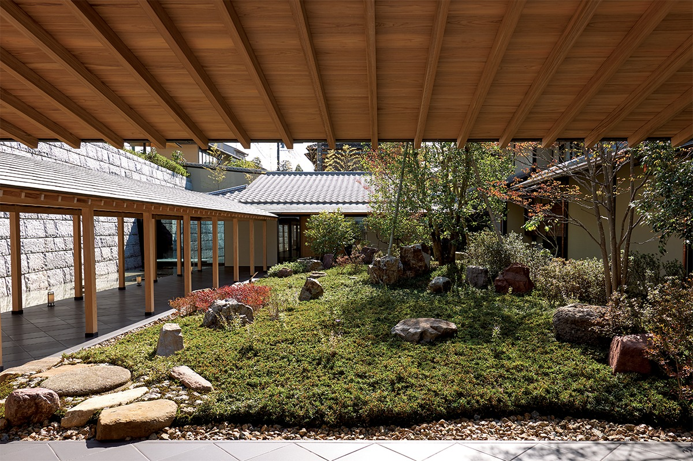
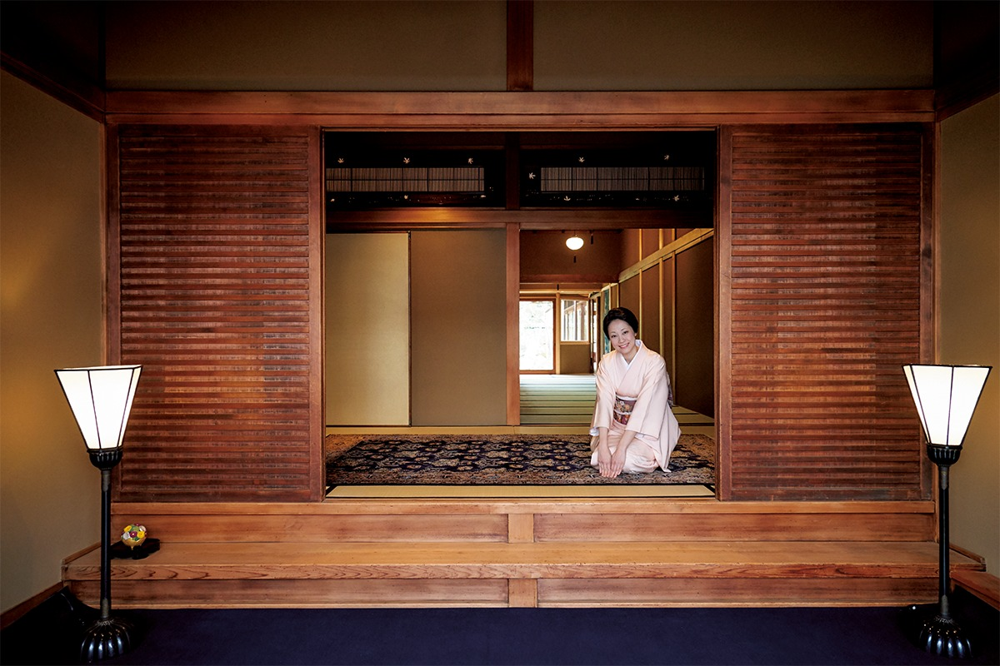
Номера
Пагода Ясака прямо перед окном
Чтобы не спорить с рётэй и окружающими храмами, отель сделали низким. Он похож на большую усадьбу под черепичной крышей. Других Park Hyatt по миру отличает подчёркнутая современность, а в Киото отель скорее напоминает изящный загородный дом, и киотские мотивы спрятаны в деталях фасада, холлов и номеров.
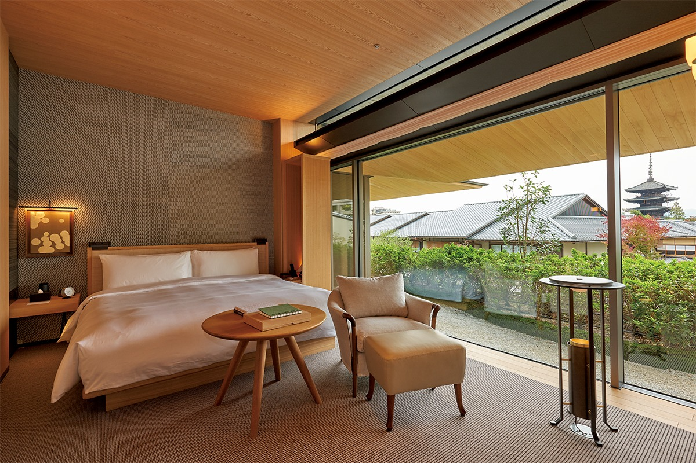
Номеров всего 70, из них девять люксов. В отделке тёплое дерево: ясень тамо и местные материалы, цвета земли и мягкие формы. Площадь номеров и люксов от 45 до 90 квадратных метров. Особняком стоит единственный люкс «Pagoda House» площадью 135 квадратных метров на верхнем этаже, откуда виден весь Киото.
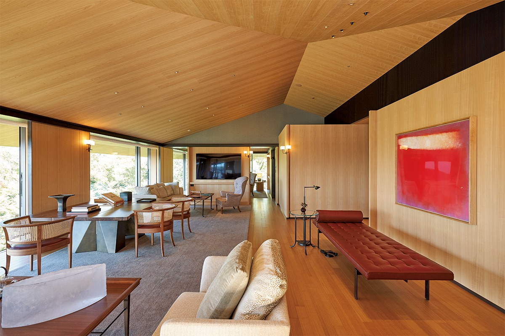
Мелочи здесь тоже продуманы. Полотенца трёх видов сделаны в Имабари и славятся мягкостью, лёгкостью и тем, как хорошо впитывают воду. На махровом халате вышит логотип, а воротник обшит кантом. Юкату, которая нравится иностранцам, шьют из чистого хлопка по собственному синему рисунку отеля. Среди банных средств есть молочко для ванны на сакэ-касу от kyoto chidoriya, а в люксах собственная линия отеля EDIT(h). Комнатные тапочки лёгкие и не теряют форму, и многие гости увозят их с собой.
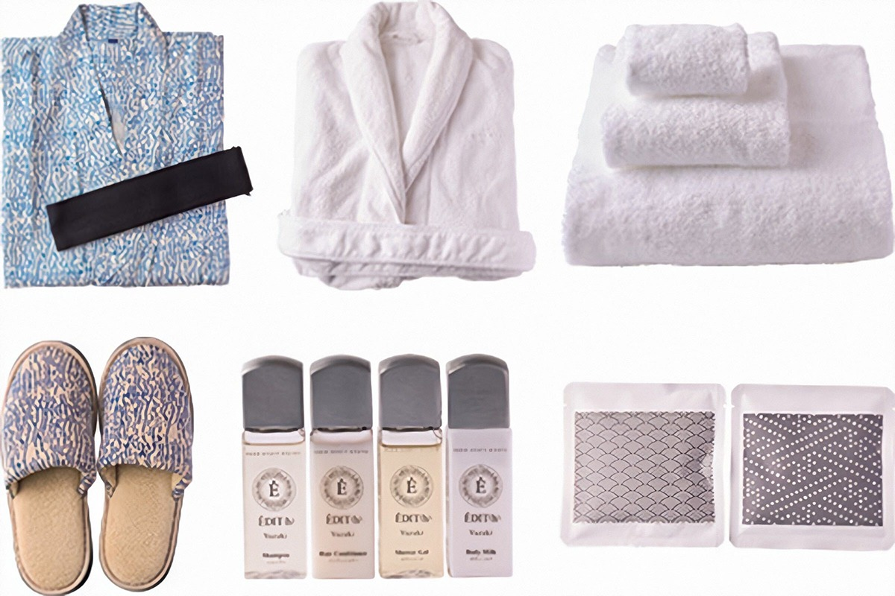
В оздоровительном центре есть фитнес и The Spa, только для постояльцев. Перед процедурой тело разогревают в банной зоне с паровой и сухой сауной. Для массажа берут масло из семян чайного куста из Удзи: в нём есть олеиновая кислота, оно увлажняет кожу. После процедуры подают обжаренный чай ходзитя от KOTOSHINA.
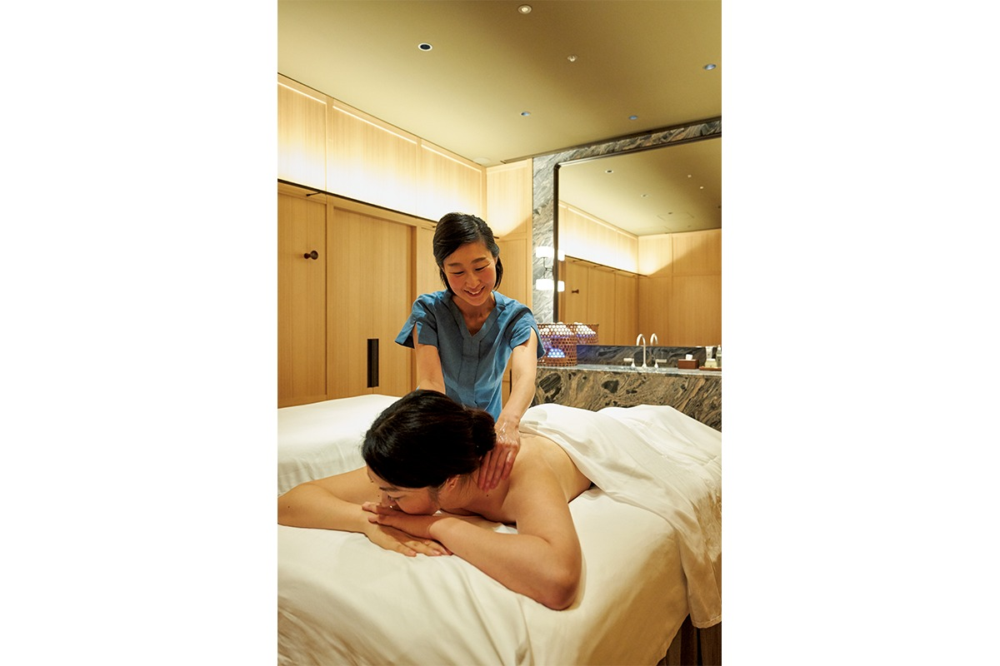
Рестораны
Тэппанъяки с французским акцентом
В отеле есть рестораны, спа, оздоровительный центр и библиотека, а пообедать и поужинать можно и по соседству, в Sanso Kyoyamato. Главный ресторан отеля Yasaka собирает сезонные продукты со всей Японии и готовит из них авторское тэппанъяки. Через внутренний дворик от него бар Kohaku, где работает барменша, побеждавшая на международном конкурсе коктейлей. Повара и бармены держатся просто, многие работали за границей, и разговор о еде легко затягивается. Вечером в окнах ресторана и бара отражаются подсвеченная пагода Ясака и огни города, и знакомый Киото вдруг кажется городом, куда приехал впервые. Park Hyatt обещает гостям личный сервис, как дома, а в Киото учится гостеприимству у старого рётэй.
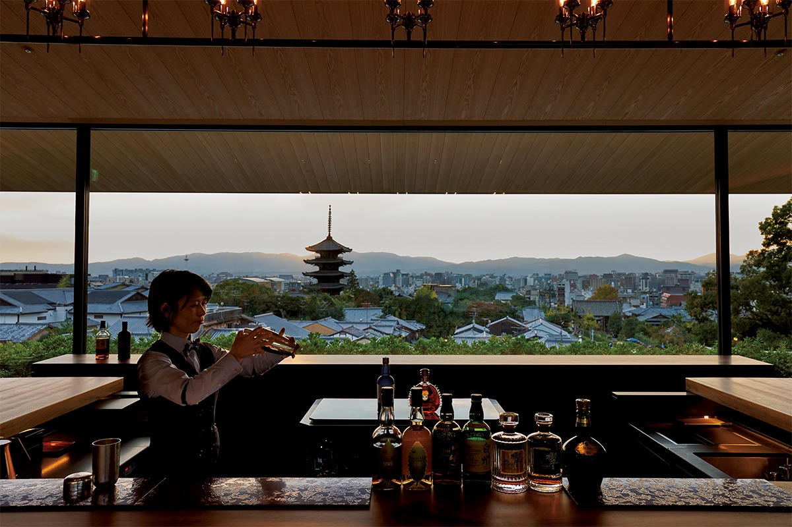
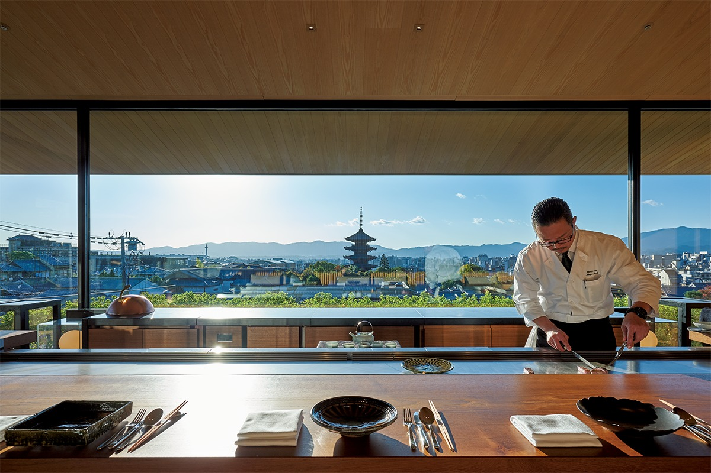
Обед и ужин в Yasaka идут под девизом «новаторское тэппанъяки», а вечером к ним подбирает вина сомелье. Шеф ресторана вырос в Нара, в семье мастеров прикладного искусства, и сначала стал гончаром. В первой поездке во Францию его захватила гастрономия, и он решил стать поваром: 16 лет учился во Франции и получил там звезду Michelin. С ним интересно говорить через стойку, а курс от первого блюда до главного, например говядины игагю, не перестаёт удивлять.
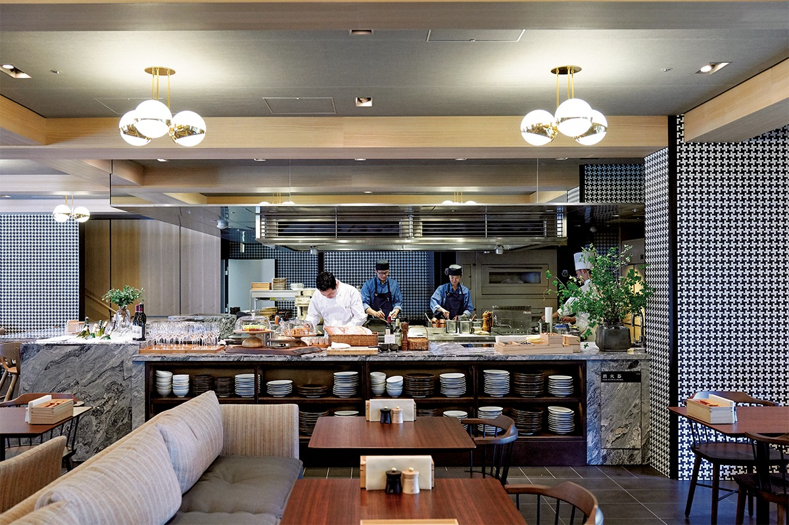
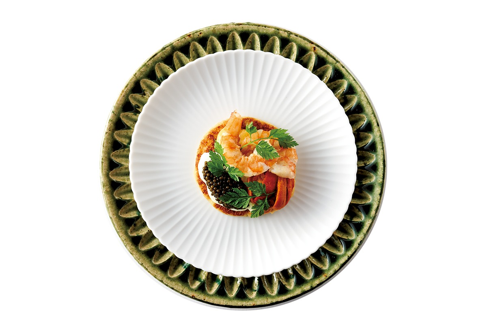
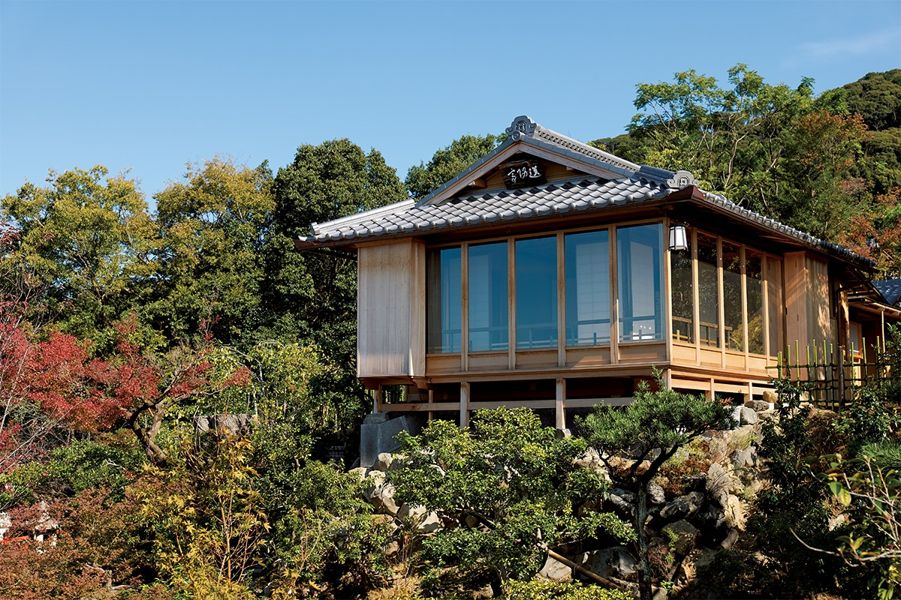
Кафе
Kyoto Bistro у Нинэндзаки
У Kyoto Bistro вход прямо с Нинэндзаки. Это непринуждённое кафе, которое кормит весь день, и блюда тут из тщательно выбранных продуктов, неожиданные и вкусные. Посуда сделана в мастерской Асахи-яки: она работает в Удзи уже 400 лет и связана с мастером чайной церемонии Энсю Кобори (1579–1647), который ценил её чашки. Шеф-повар всех ресторанов отеля рад и гостям с улицы, а ещё гордится тем, что блюда не приходится ждать: из открытой кухни их приносят быстро и горячими.
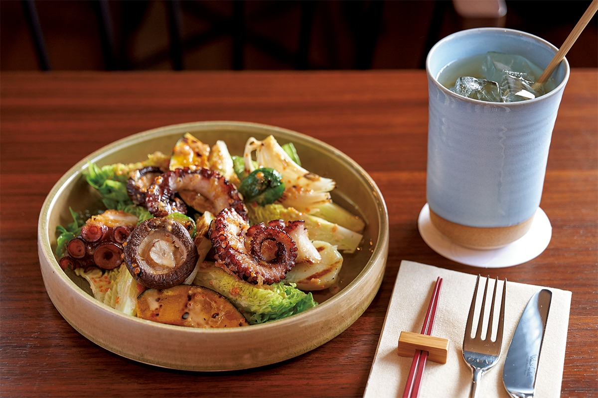
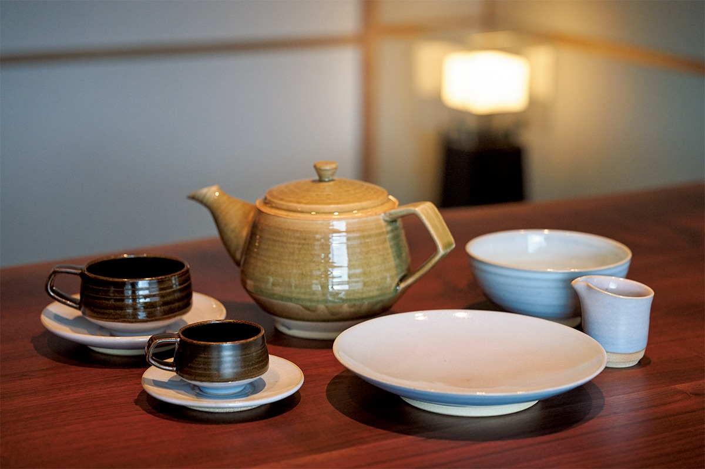
Завтрак
Рис из котелка в Sanso Kyoyamato
Японский завтрак в рётэй превосходит ожидания. Рис косихикари из Танго варят в отдельном котелке для каждого гостя прямо на глазах. К нему подают сушёный редис дайкон японского урожая, яйца из Мияма, киотский таро и морковь, мелкую рыбку дзяко с перчиками фусими-тогараси и мисо-суп на хорошем бульоне.
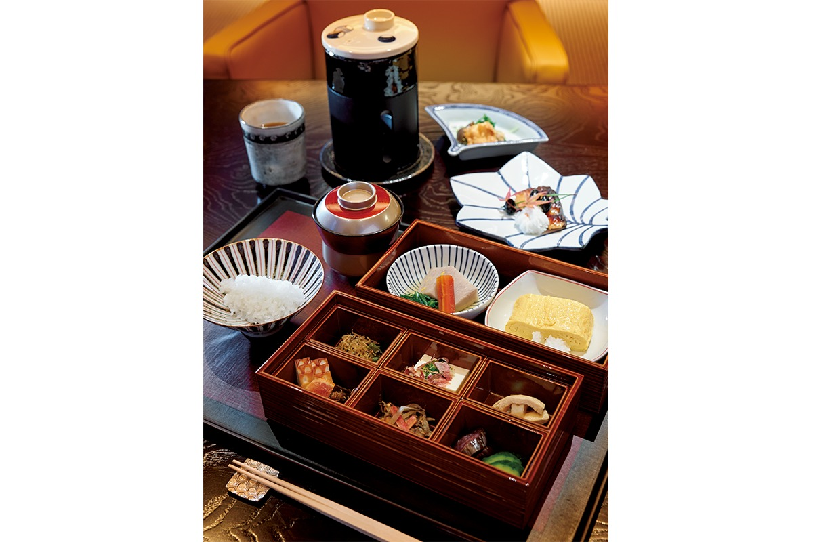
Бар
Kohaku: сакэ и джин отеля
В баре Kohaku можно попробовать то, чего нет больше нигде: джин BLUE DRAGON от киотской винокурни KI NO BI и сакэ Sawaya Matsumoto, разлитое специально для отеля. Из джина готовят фирменный джин-тоник Kohaku, а из сакэ коктейль «Сюхари» с маття и грейпфрутом.
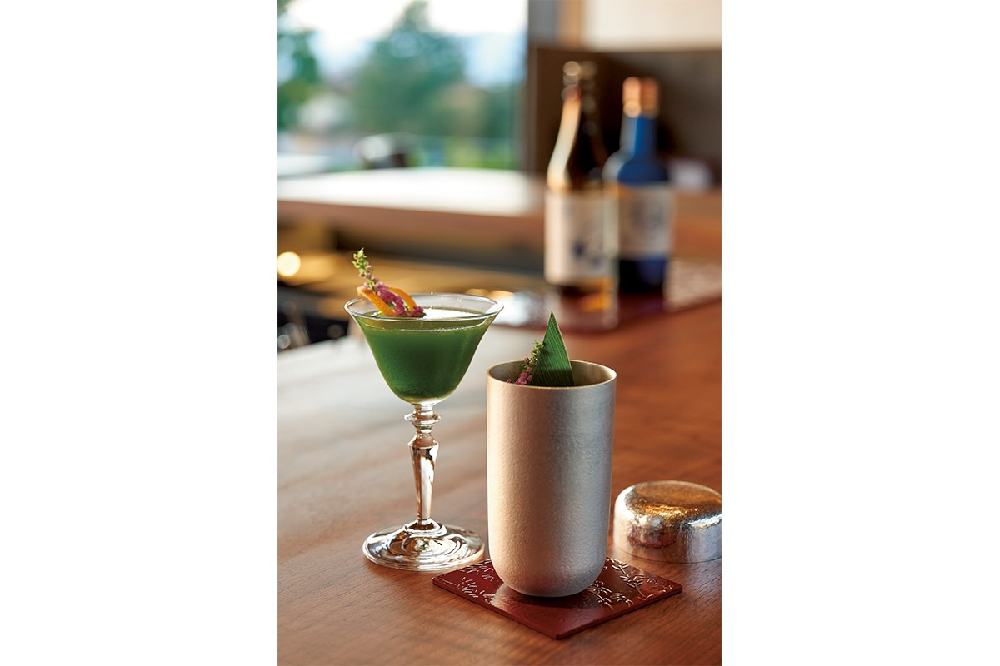
Park Hyatt Kyoto
- Адрес
- префектура Киото, город Киото, район Хигасияма, Кодайдзи-Масуя-тё, 360
- Телефон
- +81 75-531-1234
- Номера
- 70
- Цены / Вход
- от 110 000 иен за номер без налога, с сервисным сбором
- Заезд / выезд
- 15:00 / 12:00
- Как добраться
- от станции Киото на такси около 15 минут, на машине от съезда Киото-Хигаси скоростной дороги Мэйсин около 50 минут
Фото: Рико Таяма.